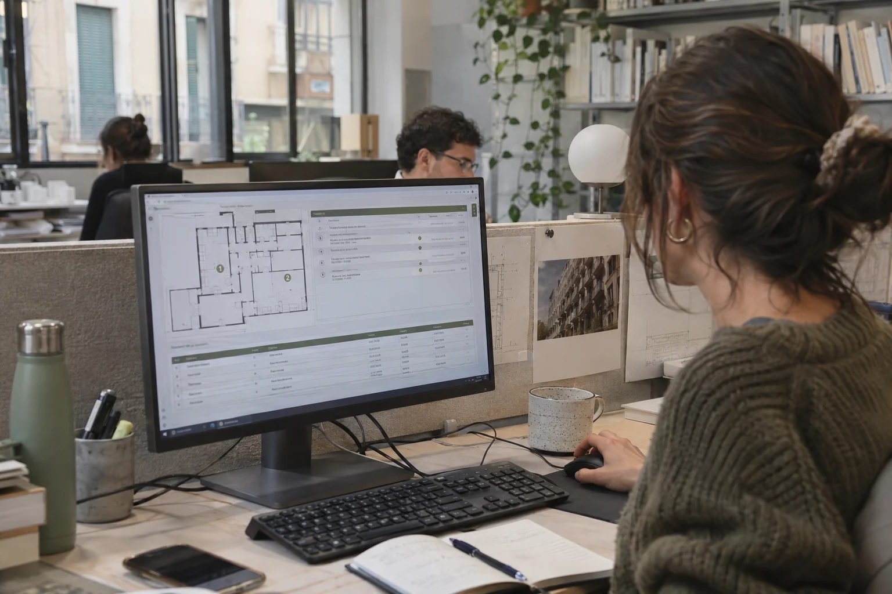

Ideas · Orquivia
Otra forma de
mirar el proceso.
Lecturas para despachos de arquitectura y project managers sobre las tareas que se repiten entre el primer encargo y la entrega al cliente.
Elegir una lecturaArrancar encargos y mejorar procesos

Un encargo. Un solo registro.
Cuando un nuevo encargo obliga a repetir la misma información, conectar el alta con carpetas, documentos y tareas puede dar al despacho más capacidad.
Antes de elegir otra herramienta, mira el recorrido.
Sigue una tarea real antes de añadir otra plataforma. Identifica dónde se detiene y qué entrega, respuesta o encargo condiciona.

Un primer cambio pequeño. Un criterio claro para avanzar.
Prueba una mejora en un recorrido acotado y compara el resultado con el punto de partida antes de extenderla al resto del despacho.
Responder al cliente
Responder sin reconstruir el proyecto.
Si responder al cliente exige cruzar mensajes y hojas, una vista de hitos y pendientes puede reunir el contexto necesario para una respuesta clara.
Del mensaje de cambio a una decisión trazable
Registrar una solicitud, su decisión y la versión afectada permite saber qué debe ejecutarse y cómo condiciona la entrega. Automatizar ese recorrido exige conservar las aprobaciones.
¿Hace falta una app o basta con ordenar el seguimiento?
Una hoja puede seguir siendo útil. La señal para construir una app aparece cuando reconstruir estados limita las respuestas, la coordinación o la capacidad del despacho.
Preparar entregas

Lo pendiente también tiene fecha.
Un documento pendiente puede condicionar una entrega. Solicitudes, avisos y estados conectados permiten ver el bloqueo antes de que llegue la fecha prevista.
La entrega está hecha. ¿Qué falta para preparar la facturación?
La entrega y la preparación administrativa pueden seguir recorridos distintos. Conectar estados y evidencias permite identificar pendientes y preparar la información necesaria según los criterios del encargo.